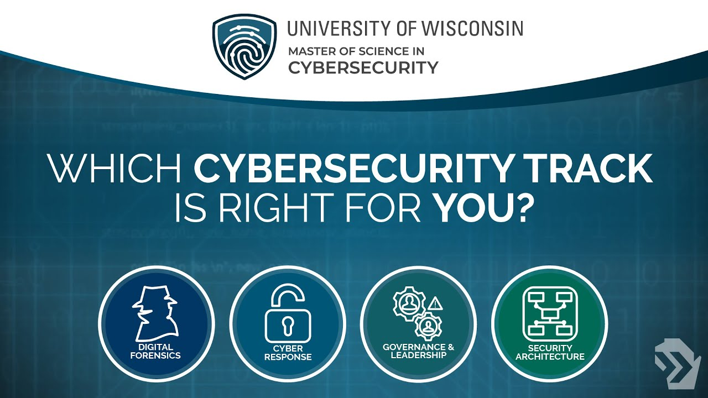

Security for information technology (IT) refers to the methods, tools and personnel used to defend an organization's digital assets. The goal of IT security is to protect these assets, devices and services from being disrupted, stolen or exploited by unauthorized users, otherwise known as threat actors. These threats can be external or internal and malicious or accidental in both origin and nature.
Programming enables so many things in our lives. Here are some examples: When you browse a website to find information, contact a service provider, or make a purchase, programming allows you to interact with the site’s on-page elements, such as sign-up or purchase buttons, contact forms, and drop-down menus. The programming behind a mobile app can make it possible for you to order food, book a rideshare service, track your fitness, access media, and more with ease.
Physical security is the protection of people, hardware, software, network information and data from physical actions, intrusions and other events that could damage an organization and its assets. Safeguarding the physical security of a business means protecting it from threat actors, as well as accidents and natural disasters, such as fires, floods, earthquakes and severe weather. A lack of physical protection could risk the destruction of servers, devices and utilities that support business operations and processes. That said, people are a large part of the physical security threat.
Controlling access to office buildings, research centers, laboratories, data centers and other locations is vital to physical security. An example of a physical security breach is an attacker gaining entry to an organization and using a Universal Serial Bus (USB) flash drive to copy and steal data or put malware on the systems.
Surveillance Surveillance involves the technologies and tactics used to monitor activity in and around facilities and equipment. Many companies install closed-circuit television cameras to secure the perimeter of their buildings. These cameras act as both a deterrent to intruders and a tool for incident response and analysis. Cameras, thermal sensors, motion detectors and security alarms are only some examples of surveillance technology.
Testing Testing is a reliable way to increase physical security. Companies that have strong security protocols test their policies to see if they need to be updated or changed. Such tests can include red teaming, where a group of ethical hackers try to infiltrate a company's cybersecurity protocols.
Comments